Health reminders
Reminders for medications and appointments. Snooze one and it comes back, and you can see what was taken and when.
SuperHub is one shared place for the calendar, the chores, the meals and the birthdays you can't forget — so it isn't all living in one person's memory.
Free for 14 days, no card up front. Already have an account? Sign in.
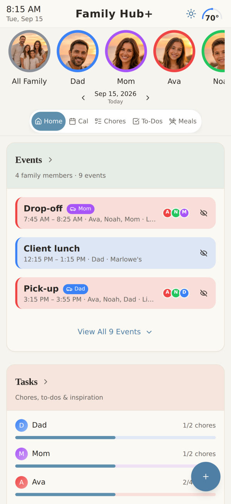
Today at a glance — who's going where, what's left to do, and what's for dinner
Put an iPad on the kitchen wall and it becomes the family's board: today's plans, whose turn it is, what's for dinner — seen on the way out the door, not buried in one person's phone.
Connect the calendars you already use. Everyone's events land in one view, each in their own colour, on every device in the house.
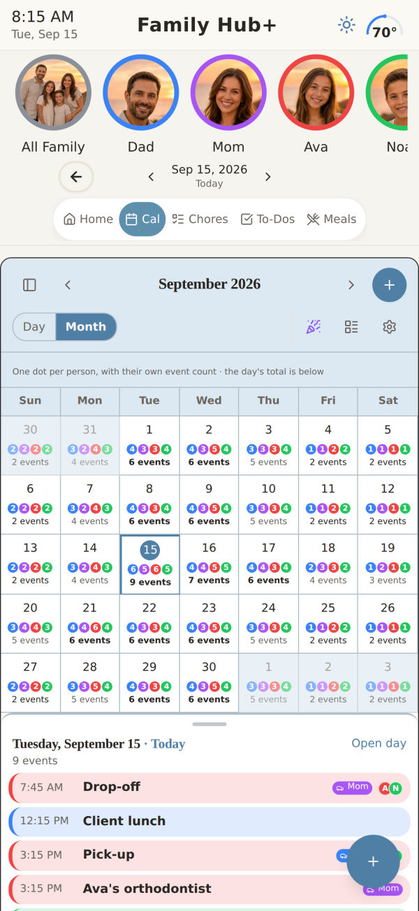
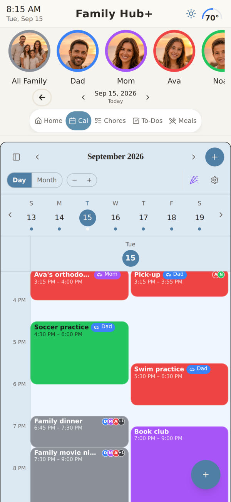
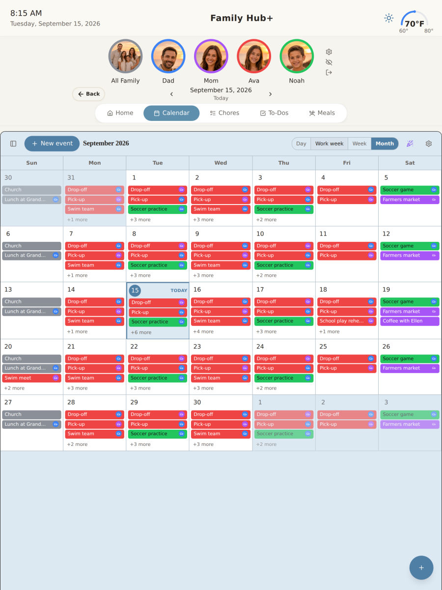
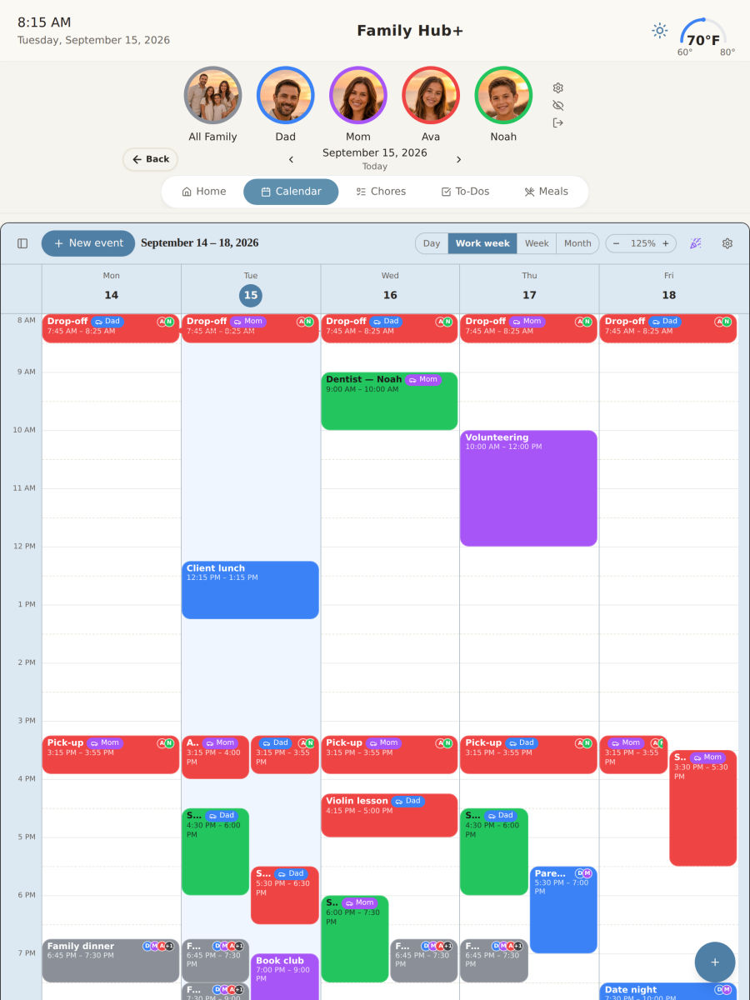
Everyone can see their own list. Finishing it earns stars, and stars turn into the things they actually want — screen time, a payout, whatever you decide.
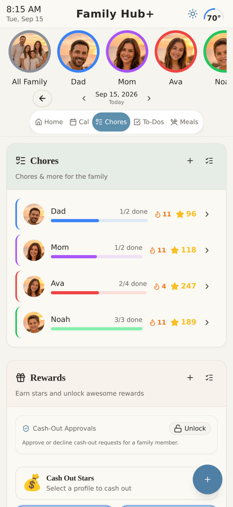
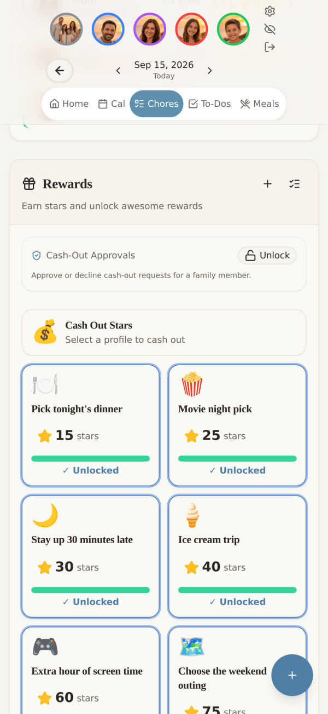
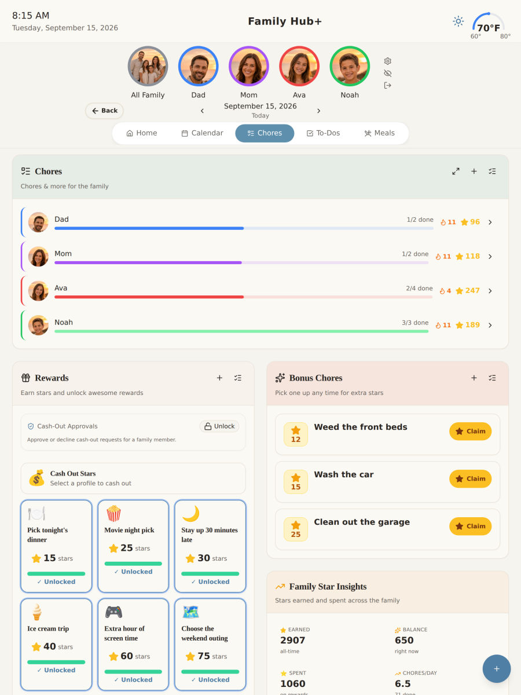
Plan the week, and the grocery list builds itself from what you planned — sorted by aisle, so you're not doubling back for the milk.
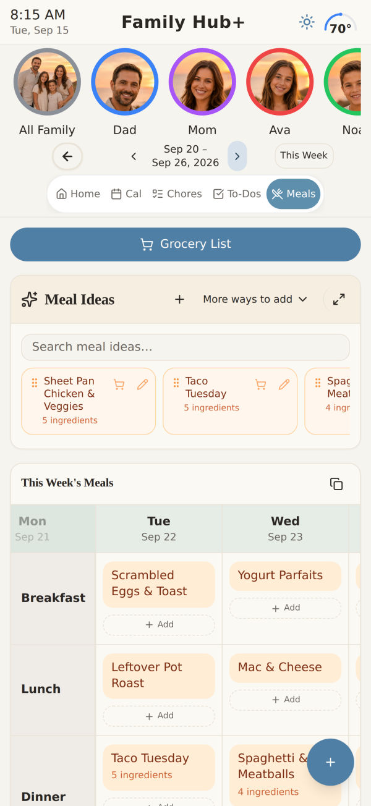
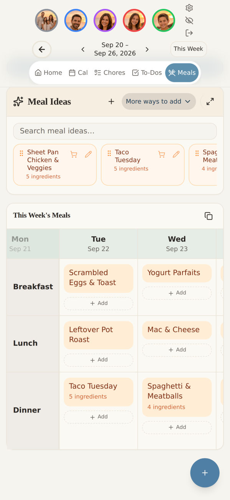
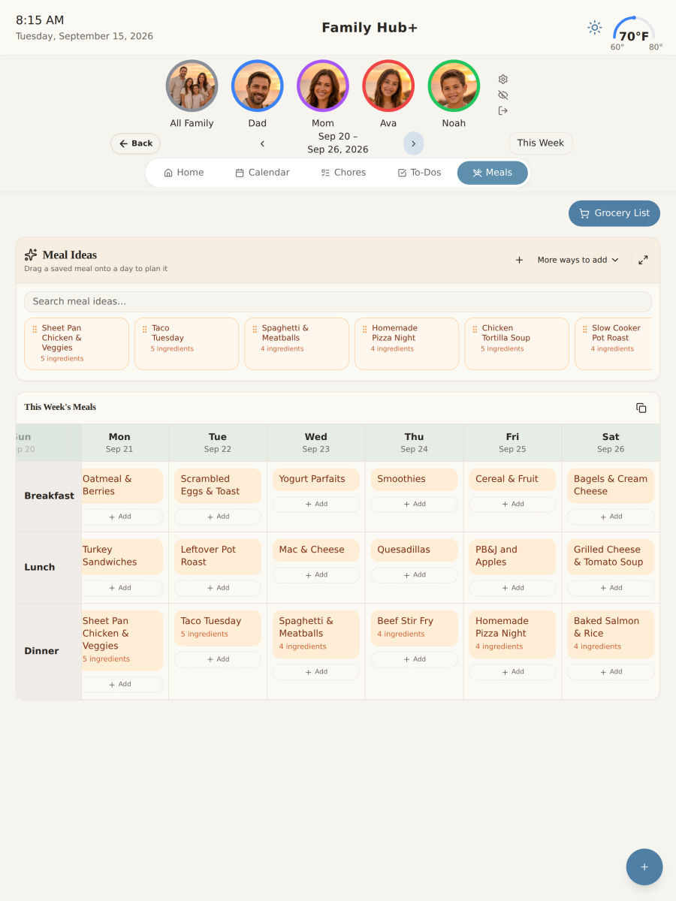
Most reminders tell you about a birthday the morning of, which is the one moment you can't act on it. SuperHub works backwards from the date instead.
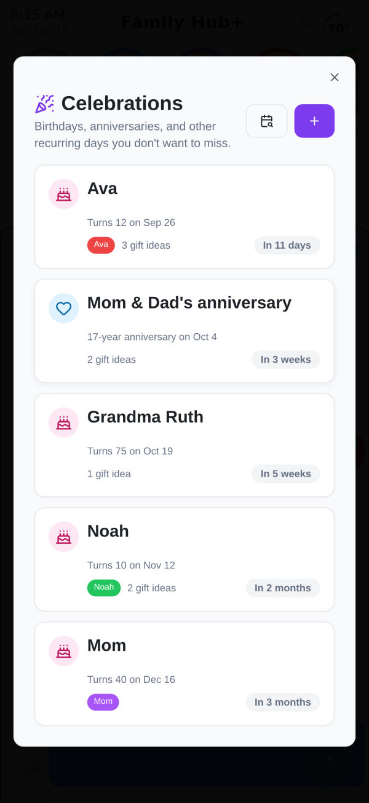
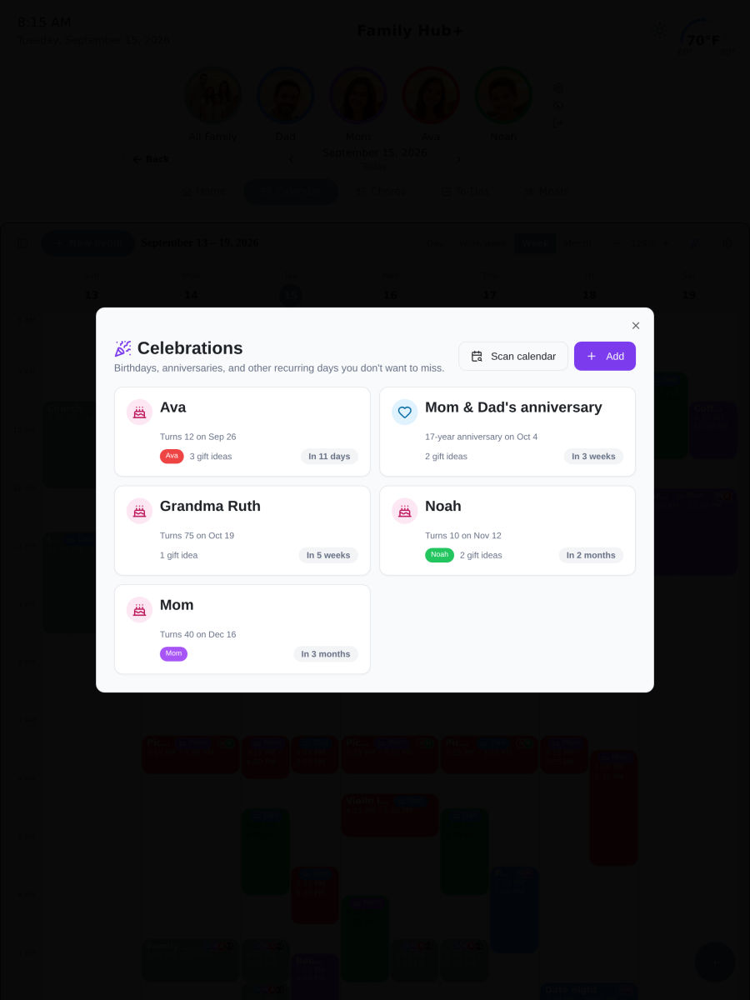
Reminders for medications and appointments. Snooze one and it comes back, and you can see what was taken and when.
The jobs that don't repeat. Break a big one into steps and tick them off as you go.
A note for one person or the whole house. Catch someone doing something right and everyone sees it.
A record of who did what, and when — easy to check when someone's sure it wasn't their turn.
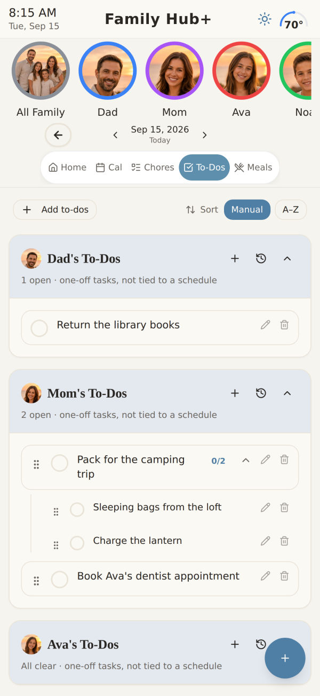
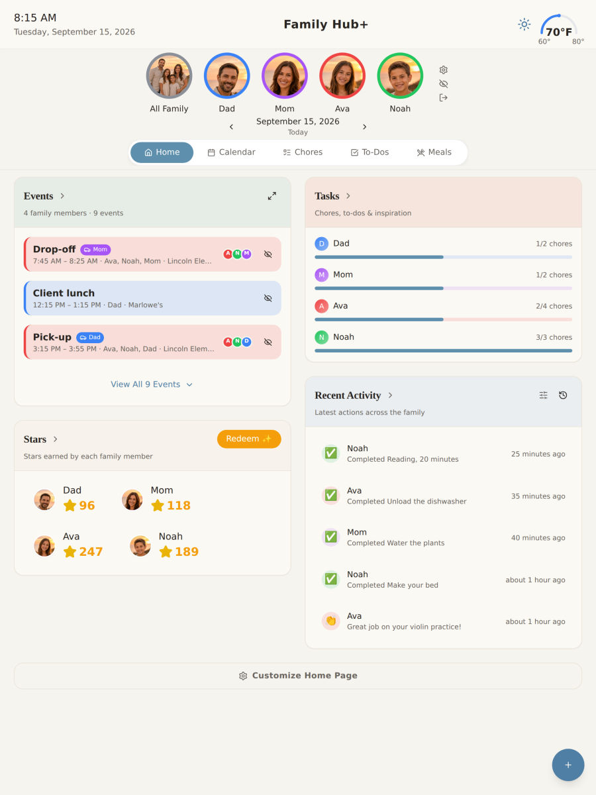
The part people dread is getting everyone else on board. The walkthrough does most of it with you, and the rest of the family joins with a code.
Names, colours, and who's a parent. Kids don't need their own email address.
Google or Outlook, both directions. Choose which of your calendars the family can see.
Everyone installs the app and enters one code. No accounts to create for them, nothing to pay per person.
There is no advertising business here to feed. SuperHub is paid for by the families who use it, which is the whole reason it can be built for them.
Child profiles have a real parental-consent step, and every profile and account can be deleted from inside the app — not by emailing someone and hoping.
The hard part isn't doing it all. It's keeping track of it all.
SuperHub was built around that. Everything the household is carrying — who's where, what's for dinner, whose turn it is, whose birthday is coming — lives in one place everyone can see, instead of in one person's head.
Free for 14 days, no card up front. Set up your family in about ten minutes, and see whether it holds before you decide anything.
Already set up? Sign in on the web.